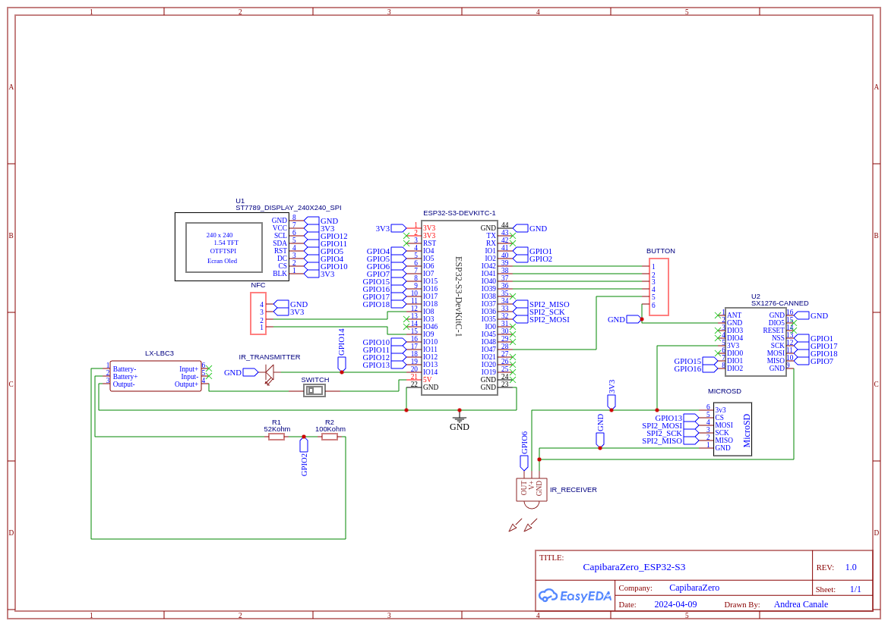
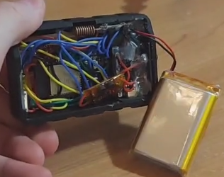
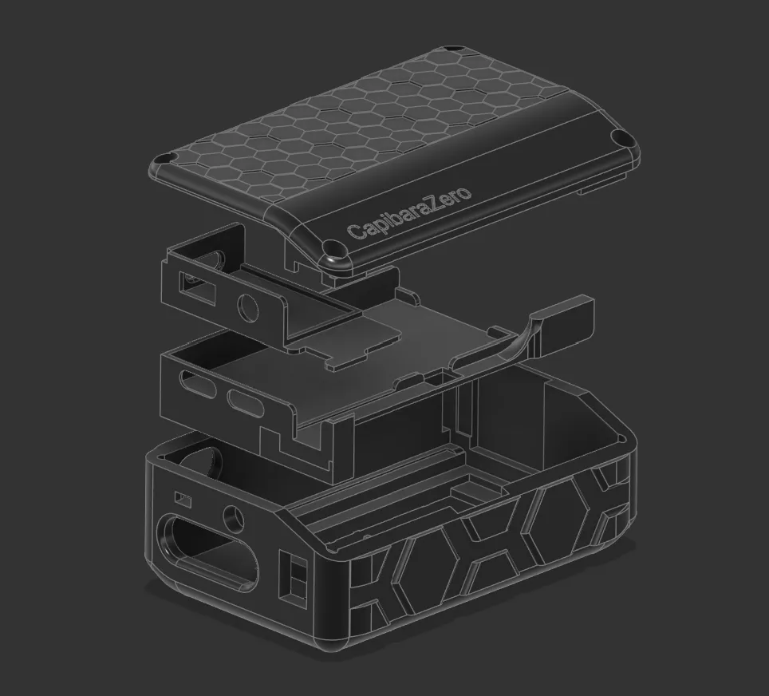
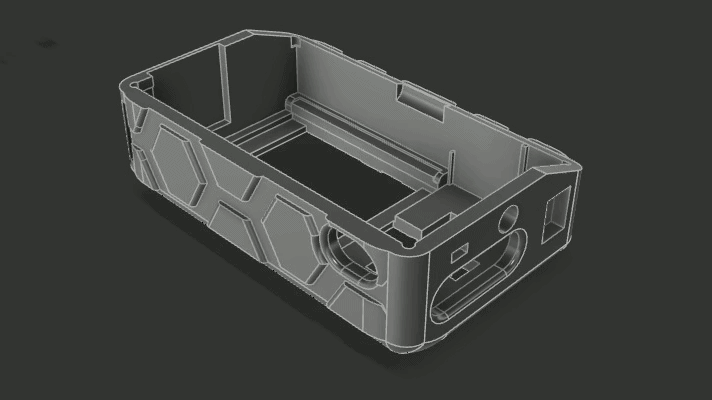

My physical security teacher at HELMo (Liège, Belgium) used a Flipper Zero to control his lecture slides. During the practical labs, he also showed how a multi-tool device like this can be used for simple demos such as basic RFID card cloning and signal replay.
I immediately wanted one... until I saw the price. At the time, spending around 250€ on this kind of device wasn’t realistic for me. So I turned that frustration into a project: build my own “Flipper Zero–style” device, from affordable parts, while learning along the way.
I quickly found several open-source alternatives, including Bruce Firmware and CapibaraZero. Back then, Bruce was more complete, but it didn’t really support a DIY build in the way I needed. CapibaraZero, on the other hand, was designed specifically around cheap, easy-to-source Arduino-style modules, with a clear schematic and a community-driven approach. Thanks to the open-source CapibaraZero GitHub project, I didn’t have to start from scratch and could focus on building, integrating, and improving the hardware. Since it’s ESP32-based, it can handle Wi‑Fi and Bluetooth directly on the main chip (without requiring an extra Wi‑Fi module like some STM32-based designs).
To reproduce the build, here’s the list of parts I used / recommend:
FlipperZero and Capibarazero are pentesting devices. Only for security testing purposes. All illegal or deviant usage is strictly prohibited.
To wire the modules together, I followed the electrical schematic below. Use it as a visual guide, but always cross-check with the firmware’s pin definitions (see the note after the diagram).

include/boards/esp32_s3_devkitc/pins.h of the Capibara firmware repository. In any case, I recommend
builders to follow the pin definitions that are actually used by the firmware instead of blindly relying on the schematic
when it comes to the binary you will flash to the SoC.
Once the wiring matches the firmware, the rest is assembly. Below is a photo of the inside of my unit so you can see the actual layout—in practice, lots of tight space and lots of wires.

The original CapibaraZero project provides a basic 3D-printable case in its repository. I also contributed to the project by designing a more advanced enclosure myself.
I modeled the entire case in Fusion 360 and designed it as a clean, modular stack of four layers:
The exploded view below shows how the layers fit together.

I shared the 3D project publicly (MakerWorld) and also contributed it back to the CapibaraZero open-source ecosystem by linking it through the GitHub repository.
Animated exploded view of the device being assembled:

Assembly-wise, the process is basically: mount the screen and buttons in the front shell, stack each electronic layer in order, route and connect the cables between layers, then finish with the battery/power stage and close everything with the lid. The schematic above is the “clean” view; the real-life interior is much messier-DIY cable management at its finest.
Important update: the original CapibaraZero firmware is now deprecated. The maintainer moved forward by forking Bruce Firmware, and the device we designed also works with Bruce (in particular with the “DIY” board target).
Requirements:
From there, flashing is done with esptool by selecting the correct serial port and writing the provided firmware images.
esptool --port /dev/ttyACM0 write_flash 0x00000 Bruce.bin
#or python3 -m esptool --chip esp32s3 --port UPLOAD_PORT --baud 460800 --before default_reset --after hard_reset write_flash -z --flash_mode dio --flash_freq 80m --flash_size detect 0x0000 bootloader.bin 0x8000 partitions.bin 0xe000 boot_app0.bin 0x10000 firmware.binSlide clicker (EPITA Paris): I use it to switch slides when I present course projects during my engineering program.
Wi‑Fi captive portal (conferences / IT conventions): I set up a Wi‑Fi access point that displays a captive portal and redirects visitors to my personal website.